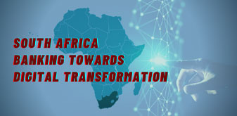
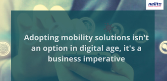
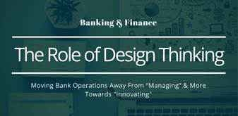

Financial Technology Blogs
All
Solution
Topic
-

Impacts of revolution 4.0 on Vietnam banking sector
Updated On : November 2020Read More -

Mauritius: Africa's Fintech Hub
Updated On : November 2020Read More -
Staff Augmentation in the times of Covid 19
Updated On : November 2020Read More -
NPCI set to take UPI success to the rest of Asia
Updated On : November 2020Read More -
Neo Banking - What’s so ‘Neo’ About it?
Updated On : October 2020Read More -
Digital Banking in Malaysia
Updated On : October 2020Read More -
How Myanmar could be a leader in digital financial services by adopting "Sandbox"?
Updated On : October 2020Read More -

The Financial Sector Conduct Authority (FSCA) of South Africa
Updated On : September 2020Read More -

European Banking 2020 - An Accelerated shift towards Digital Banking due to Covid19
Updated On : September 2020Read More -

Singapore - Financial Fitness and Digital Banking in the Times of COVID-19
Updated On : September 2020Read More -

What Drives Open Banking Success?
Updated On : September 2020Read More -
Asian Development Bank to support Philippine's Financial Inclusion Reforms
Updated On : September 2020Read More -
The Future of Banking – Exciting Times Ahead
Updated On : September 2020Read More -
Vietnam's National Comprehensive Financial Strategy until 2025, with orientations to 2030
Updated On : August 2020Read More - 
South Africa's Banking Industry to Digitally Transform, Innovate and Succeed
Updated On : August 2020Read More -
Myanmar's Financial inclusion strategy prioritized Mobile Banking Platform
Updated On : August 2020Read More -
Fintech in the Kingdom of Cambodia
Updated On : August 2020Read More -
COVID-19 Triggering African Banks & Financial Institutions to adopt Digital Transformation
Updated On : August 2020Read More -
Monetary Authority of Singapore (MAS) Partners with Financial Industry...
Updated On : August 2020Read More -
Vietnam Mobile Payment welcomes Cashless Age
Updated On : July 2020Read More -
E-payments, a promotional key to Financial Inclusion in Cambodia in 2020
Updated On : July 2020Read More -
How Automation is Transforming the Banking Industry?
Updated On : July 2020Read More -
Top 8 Banking Challenges faced by Bank CIOs in 2020.
Updated On : July 2020Read More -
Project Bakong 2020 - A Dollar Free Cambodia?
Updated On : July 2020Read More -
Sri Lanka: Digital Transformation through Open Banking Framework
Updated On : July 2020Read More -
Recent developments on "Anti-Money Laundering Law passed by National Assembly Cambodia"
Updated On : June 2020Read More -
The future of customer onboarding & KYC post-COVID is digital
Updated On : June 2020Read More -
How new Technologies will drive global banking?
Updated On : June 2020Read More -
Redefine Banking with Artificial Intelligence in 2020
Updated On : June 2020Read More -
The Next-Gen of Digital Banking
Updated On : June 2020Read More -
Understanding Anti Money Laundering and why it should be a top priority for financial institutions?
Updated On : May 2020Read More -

The importance of IT Staff Augmentation for an IT organization
Updated On : May 2020Read More - 
The Advantages of Mobility Solutions in the Digital Age
Updated On : May 2020Read More -

Regulatory Compliance and Money Laundering: 3 Laws That Strengthen Sri Lanka
Updated On : May 2020Read More -

Digital Growth Strategies for Banks
Updated On : April 2020Read More -
Money Laundering Amid COVID19
Updated On : April 2020Read More -
The Growth of Digital Lending Market in India
Updated On : April 2020Read More -
Importance of Remote Infrastructure Management for Businesses
Updated On : March 2020Read More -
Mobile Banking Trends in 2020
Updated On : January 2020Read More -
10 Ways Artificial Intelligence Is Transforming Banking Operations
Updated On : December 2019Read More -
International Financial Reports Standards (IFRS 9) for the Financial Industry
Updated On : December 2019Read More -
Credit Unions Approach To Digital Transformation
Updated On : November 2019Read More -
All About RBI's Initiative Of Centralized Information Management System (CIMS) To Build The Next Level Regulatory Reporting
Updated On : November 2019Read More -
The Social Impact Of Microfinance (MFIs) In Myanmar
Updated On : October 2019Read More -
Why Automated Data Flow (ADF) goes beyond reporting for banks in India
Updated On : October 2019Read More -
A closer look at the biometric backed fintech revolution in Thailand
Updated On : September 2019Read More -
Data Archival Compliance for Banks & Finance Institutions
Updated On : September 2019Read More -
10 ways Robotic Process Automation can improve the Loan Origination Process
Updated On : August 2019Read More -
History of Non-Banking Financial Institutions (NBFI)
Updated On : August 2019Read More -
Digital Banking in Cambodia
Updated On : July 2019Read More -
5 big Banking innovations in 2019
Updated On : July 2019Read More -
Future of Mobile Banking and Emerging Trends
Updated On : June 2019Read More -
Digital lending – The game changer in SME financing
Updated On : May 2019Read More -
RBI's Regulatory Sandbox for Fintech Startups
Updated On : May 2019Read More -
Open banking and its boost to innovation
Updated On : April 2019Read More -
The Future of Finance in Myanmar is Digital
Updated On : February 2019Read More -
10 Tips on how to thrive in an age of Digital Disruption
Updated On : January 2019Read More -
5 ways in which a financial institution can begin its digital
Updated On : January 2019Read More -
5 Lending Management Trends in Indonesia for 2019
Updated On : December 2018Read More -
Becoming a Digitally enabled bank And benefits of becoming a digitally Bank...
Updated On : November 2018Read More -
How the new lending technology is reshaping the loan origination process?
Updated On : October 2018Read More -
How cloud is transforming the banking industry?
Updated On : September 2018Read More -
The Growth of Digital Lending in SouthEast Asia
Updated On : September 2018Read More -
How Mobility is Transforming Financial Services?
Updated On : June 2018Read More -
Is Big Data Replacing Data Warehouse? Busting the myth
Updated On : June 2018Read More -
The inside story on transforming core banking systems
Updated On : June 2018Read More -
Credit scoring for Lending - A new perspective
Updated On : May 2018Read More -
What is Cheque Truncation System? CTS Benefits and Highlights of CTS Check.
Updated On : May 2018Read More -
How digital banking is transforming fraud detection?
Updated On : May 2018Read More -
Customer on-boarding and origination in a digital world
Updated On : May 2018Read More -

The 5 Global Trends in Mobile Banking in 2018
Updated On : April 2018Read More -
How IoT is changing the world and influencing Banks and Financial...
Updated On : April 2018Read More - 
The Role of Design Thinking in Banking & Finance Industry
Updated On : March 2018Read More -
The Drive for a Modern Data Warehousing
Updated On : March 2018Read More -
5 ways technology can help NBFCs grow
Updated On : March 2018Read More -
Mobile Solution for Tracking Collection Agents in Lending
Updated On : March 2018Read More -
How AI is Learning the Language of
Updated On : February 2018
Finance ?Read More -
Blockchain Technology in Banking & Finance
Updated On : February 2018Read More -
The Top 10 NBFCs in India, 2018
Updated On : February 2018Read More -
Regulatory Reporting for Housing Finance Companies
Updated On : january 2018Read More -
AI and its impact on the finance industry
Updated On : December 2017Read More -
The role of NBFCs in the Indian Economy
Updated On : November 2017Read More -
Rise and Role of Microfinance in Cambodia
Updated On : November 2017Read More -
BI & Analytics
Updated On : September 2017Read More -
Smart Lending
Updated On : September 2017Read More -
MicroFinance - Yesterday, Today and Tomorrow
Updated On : September 2017Read More -
Next Generation Core Banking Solution: 7 New Features
Updated On : June 2017Read More -
Understanding the business of Data Archiving Solutions in Banking
Updated On : April 2017Read More -
Aligning risk and finance functions through developments in four key data...
Updated On : February 2017Read More -
Improving organization's financial strength through transparency in bank operations
Updated On : February 2017Read More -
Cloud Computing in Banks
Updated On : November 2016Read More -
Security & SWIFT
Updated On : October 2016Read More -
Nelito's Finacle Practice
Updated On : July 2016Read More -

Nelito's Quality Practice
Updated On : July 2016Read More -
Features of new-age digital Core Banking Systems (Part 1)
Updated On : July 2016Read More -
What Is Core Banking Solution (CBS)?
Updated On : June 2016Read More -
What are JLG (Joint Liability Groups)?
Updated On : June 2016Read More -
Nelito's Data Quality Solution
Updated On : June 2016Read More -
Challenges faced by Microfinance Institutions
Updated On : May 2016Read More -
Mobile Banking for the co-operative segment in India
Updated On : May 2016Read More -
What are SWIFT Payments?
Updated On : April 2016Read More -
FinCraftTM DoorStep Banking Solution for Financial Inclusion
Updated On : April 2016Read More -
FinCraftTM MIS ADF
Updated On : feb 2016Read More -
The Importance of Data Quality Management and Data Cleansing for Banks
Updated On : February 2016Read More -
Nelito’s solutions for PMJJBYand PMSBY
Updated On : January 2016Read More -
Internet Banking
Updated On : November 2015Read More -
Leveraging the power of BI thru Business objects
Updated On : October 2015Read More -
Best Practices For Upgrading Your Core Banking Solution
Updated On : October 2015Read More -
The Importance of Financial Inclusion in India
Updated On : August 2015Read More -
AADHAAR Enabled Payment System (AEPS)
Updated On : June 2015Read More
© Nelito Systems Ltd. Terms & Privacy